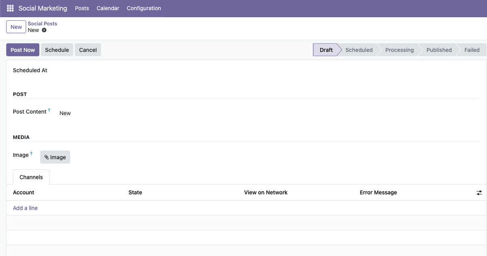

Connect a LinkedIn Developer App, authorize a personal profile or Company Page, compose in Odoo, and publish provider-safe text with an optional image through LinkedIn's official APIs.
The OAuth Redirect URL is generated from your installation's standard Odoo
web.base.url. Make sure that value is your public HTTPS Odoo address before
configuring the LinkedIn Developer App. No Automatify production callback URL or
provider credential is bundled with this addon.
Requires Social Publisher and a LinkedIn Developer App owned or authorized by the installing organization. The app must have the LinkedIn products and permissions required for the selected author mode. LinkedIn controls API access, approval, limits, and availability.
Client credentials and OAuth tokens are not bundled with this addon. The connector communicates directly with LinkedIn's official OAuth, Images, and Posts API endpoints. Post text and selected image bytes are sent to LinkedIn only when publishing or when a scheduled post becomes due.
License: LGPL-3
Support: admin@automatify.com.au